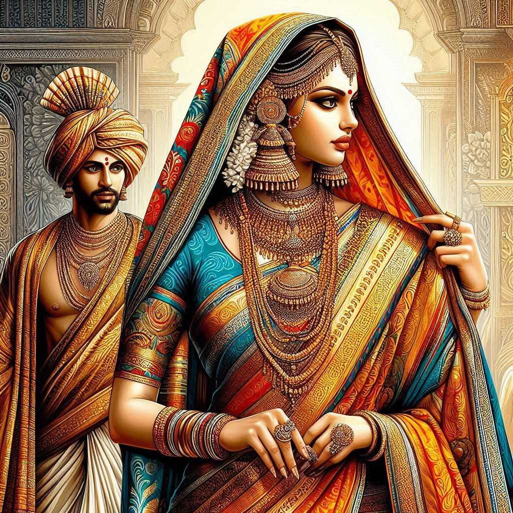
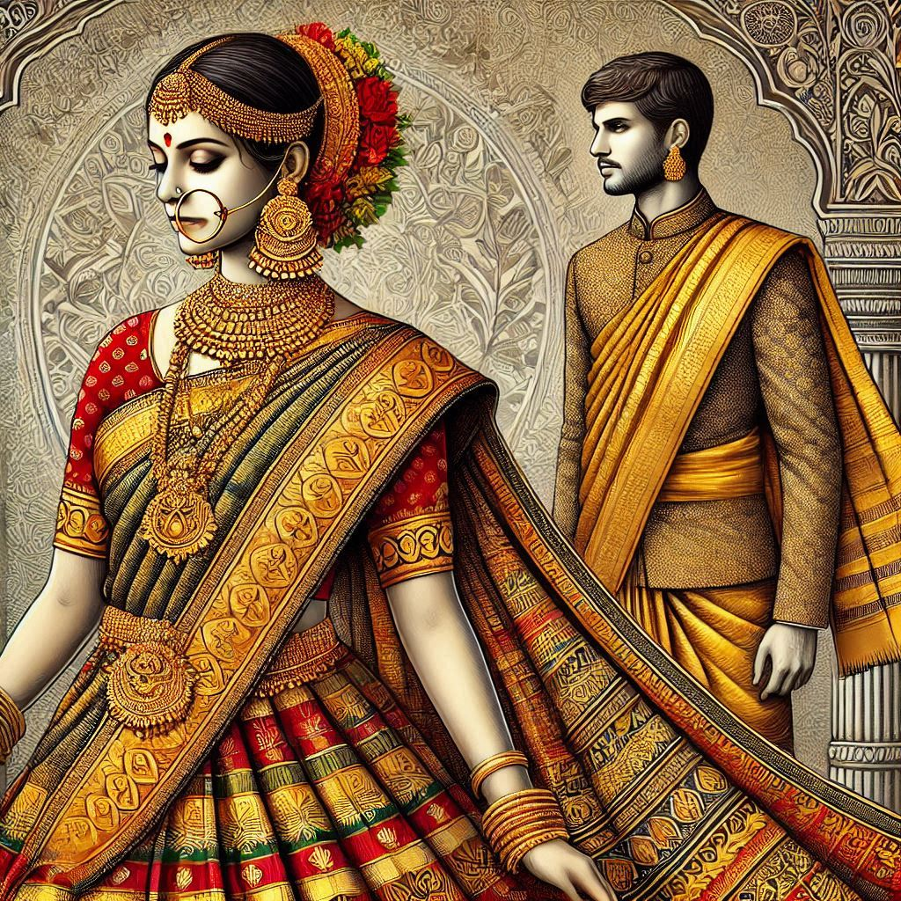

Traditional dress in Telangana reflects its rich cultural heritage and is influenced by the state's historical and regional diversity. The attire varies based on gender, occasion, and community, with some specific styles that are unique to the region. Here’s an overview of traditional and contemporary clothing in Telangana:
1. Traditional Dress for Women
- Saree: The saree is the most iconic traditional attire for women in Telangana, worn for daily use as well as special occasions. The Pochampally saree (from the Pochampally region, famous for its Ikat weaving technique) is especially popular. These sarees are typically made of cotton or silk, and are often worn with a blouse or choli.
- Telangana Saree Style: The saree is draped in the traditional style, similar to how it is worn in the southern states of India, with a distinct pleat formation and the pallu (the loose end of the saree) draped over the shoulder.
- Langa Voni: This is a traditional attire worn by young girls and unmarried women in Telangana. It consists of a langa (a long skirt) and a voni (a matching blouse or top). The outfit is often adorned with intricate embroidery and bright colors, making it ideal for festivals or weddings.
- Dupatta and Churidars: The salwar kameez with a dupatta (scarf) is also worn by women in urban settings. The churidar (tighter-fitting pants) or loose salwar (wide pants) is paired with a tunic or kurta, making it a comfortable and stylish option for daily wear.
- Jewelry and Accessories: Traditional jewelry, such as nath (nose rings), maang tikka (forehead ornament), vanki (arm bands), and bangles, are worn to complement the outfit. Haar (necklaces) and jhumkas (traditional earrings) are popular accessories.
2. Traditional Dress for Men
- Dhoti/Veshti: The traditional outfit for men in Telangana is the dhoti or veshti, a simple yet elegant piece of cloth wrapped around the waist and tied in place. The dhoti is usually worn during formal occasions, festivals, and religious ceremonies.
- The lungi: is a similar but lighter piece of cloth worn in rural areas, often during the hotter months, as a more casual garment.
- Kurta and Pyjama: For day-to-day wear or semi-formal occasions, men in Telangana may wear a kurta (a long shirt) with a pyjama (loose-fitting pants). In more formal settings, the kurta is often paired with a sherwani or a bandi (a traditional jacket).
- Sherwani and Bandhgala: For weddings or festive occasions, men may wear a sherwani (a long coat-like garment) or bandhgala (a formal jacket) over a kurta, often made from silk or brocade with embroidery. The sherwani is more commonly worn in urban and upscale settings.
- Headwear: Men in Telangana, especially those in rural areas, sometimes wear a topi (cap) or a pagdi (traditional turban) during special ceremonies or festivals.
3. Traditional Dress for Special Occasions and Festivals
- Weddings: Wedding attire in Telangana is often grand and elaborate.
- For Women: The bride traditionally wears a silk saree, often in bright colors like red, green, or yellow, with heavy gold jewelry and ornate decorations. In some communities, the bride might wear a langa voni during her wedding.
- For Men: The groom typically wears a white dhoti or veshti with a silk or brocade kurta and sherwani, often paired with a turban for a royal look.
- Festivals (Bathukamma, Bonalu, Sankranti): During major festivals, such as Bathukamma, women dress in new, bright-colored sarees or langa voni, and men wear dhotis or kurta-pyjamas. Special clothes are worn during the Ugadi (Telugu New Year) as well, with the colors and designs reflecting festive cheer.


4. Modern and Contemporary Clothing
- Western Influence: In cities, women and men can be seen wearing jeans, skirts, blouses, t-shirts, and dresses, with the choice of attire often depending on the occasion and setting.
- Business Attire: In urban professional settings, men commonly wear shirts and trousers, while women wear suits or formal dresses. The rise of corporate culture has led to a shift toward more global styles of dress.
5. Distinctive Regional Styles
- Pochampally Ikat: This weaving technique from the Pochampally region of Telangana produces distinct Ikat sarees and fabrics with beautiful geometric patterns. The dyeing process involves tying threads and dyeing them in different colors, creating intricate patterns. These fabrics are often used for sarees, dupattas, and other garments.
- Banjara Embroidery: The Banjara community, known for their bright and colorful clothing, often adorns their outfits with heavy, intricate embroidery using mirrors, beads, and vibrant threads. This traditional embroidery is used for skirts, blouses, and shawls, giving them a distinct look.
6. Climate and Clothing Adaptation
- Cotton Fabrics: Given the hot and semi-arid climate of Telangana, light, breathable fabrics like cotton are commonly worn, especially during the summer months. For formal occasions or winter, silk and wool are also favored.
- Comfort: With the hot weather, light clothing such as cotton sarees for women and dhoti or lungis for men are common everyday wear, while for urban areas, more modern attire like salwar kameez and Western outfits are popular.
Conclusion
Traditional clothing in Telangana is a beautiful reflection of its rich cultural heritage, with sarees, dhotis, and kurta-pyjamas forming the core of daily wear, while specific garments like the Pochampally sarees and Banjara embroidery add a regional flair. Though contemporary clothing styles influenced by urbanization and globalization have become more common, traditional attire continues to hold significant importance, especially during cultural and religious celebrations.